如如-智慧軟體機器人
如如-智慧軟體機器人
ruRU® Runtime Utility Syetem 系統工具 使用說明書
1.帳號管理
1.1.使用者歸屬組織及權限角色
1.2.批次設定使用者的組織
2.權限設定
2.1 權限維護作業
2.2 角色權限
2.3 設定保密群組
3.系統設定
3.1 系統參數
3.2 郵件伺服器設定
3.3 萬年曆
3.4 多用戶衝突鎖定的排除方式(解鎖工具)
3.5 組織基本資料設定
3.6 圖示設定
3.7 資料表引用查詢
3.8 伺服器主檔
4.表單相關設定
4.1 元件模版設定
4.2 表單編碼欄位設定
4.3 幣別設定
5.按鍵相關設定
5.1 工作排程清單
5.2 外部程式設定(API)
5.3 輸出入格式設定作業
5.4 單據發送MAIL設定作業
5.5 檔案櫃
5.6 推播通知作業設定
6.報表相關設定
6.1 報表條文
6.2 報表元件對應條文設定
6.3 報表輸出記錄查詢
7.API相關設定
7.1 API 限定來源
7.2 系統API
7.3 外部呼叫按鍵API
7.4 API查詢資料設定
8.問題處理
8.1 問題中心
1.帳號管理
1.1 使用者歸屬組織及權限角色
- 本功能須登入應用系統內才能操作，且須使用Site「系統管理員」權限的帳號。 使用時機：單一或少數幾個使用者加入，要使用系統時，需先為使用者設定。
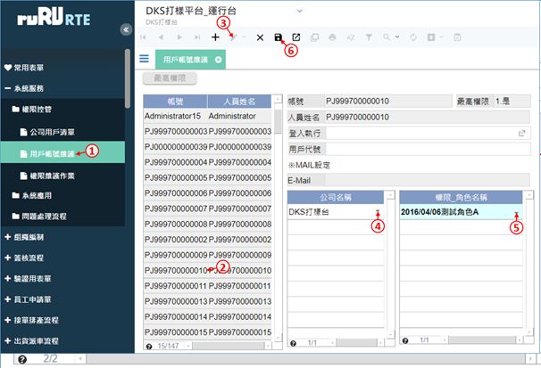
- 若此帳號登入後要自動執行某一個動作，請挑選登入執行的項目(不是所有系統都能挑選)。
- 輸入用戶代號(可不設，通常用來輸入該帳號的人員編號)。
- 勾選「操作追蹤」，可追蹤這個使用者的表單操作動作，並可選擇勾選BPS視窗及資料庫查詢。
- 勾選「BPS視窗」，會在出現錯誤訊息時跳出除錯用的BPS視窗，一般使用者不建議開啟。
- 勾選「資料庫查詢」，可在BPS視窗中開啟資料庫查詢視窗，以查詢資料，建議只開放給系統管理者或是系統開發者。
- 設定完畢之後請存檔。
1.2 批次設定使用者的組織
- 使用時機：為多個使用者設定組織。
- 本平台支援同一套系統分成多個組織的功能，一般情況只有一個組織，每個使用者都要屬於至少一個組織，才能操作系統。
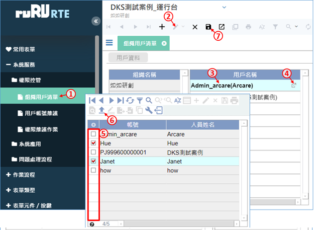
- 在左側的表單目錄中，展開「系統服務」→「權限控管」，然後按下「組織用戶清單」，開啟表單。
- 進入編輯模式。
- 點選「用戶名稱」表格內的任一筆資料。
- 開啟帳號人員清單。
- 勾選要設定組織的帳號。
- 將帳號回傳至「用戶名稱」表格中。
- 設定完畢之後請存檔。
2.權限設定
2.1 權限維護作業
- 本功能須登入應用系統內才能操作。
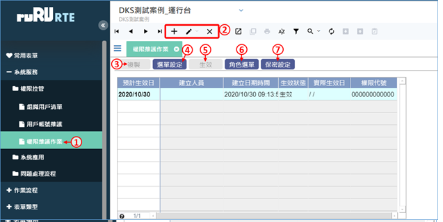
- 在左側的表單目錄中，展開「系統服務」→「權限控管」，然後按下「權限維護作業」，開啟表單。
- 可新增、修改、刪除權限設定資料。
- 複製功能可將生效的權限資料，複製到駐留筆的權限設定資料中(Ctrl+F2)。
- 可開啟「權限選單建置作業」(Ctrl+F3)。
- 若駐留筆權限設定尚未生效，可將該筆權限設定生效(Ctrl+F5)。
- 可開啟「角色對應選單設定」(Ctrl+F6)。
- 可開啟「保密群組設定」(Ctrl+F7)。
- 附註：若當日為預計生效日，則系統會將該權限自動改為生效，並將原生效權限改為失效。
2.1.1 權限版本設定
新增權限版本：

- 按下新增鍵，新增一筆資料。
- 輸入這一組權限設定的預計生效日期。
- 按下存檔鍵，再按下「確定」即可。
修改權限設定：

- 按一下要修改的資料。
- 按下修改鍵，進入修改模式。
- 修改這一組權限的預計生效日期。
- 按下存檔鍵，再按下「確定」即可。
刪除權限設定：

- 按一下要修改的資料。
- 按下刪除鍵。
- 按下「確定」即可。
- 刪除的資料無法復原，請務必謹慎使用。
複製權限資料：權限複製功能，是將目前生效的權限資料，複製到選取的權限資料上。

- 按一下要複製權限的權限資料。
- 按下「複製」鍵。
- 確定要複製資料，按下「是」即可。
- 要取消複製，則按下「否」。
生效權限資料：生效功能，可以直接讓尚未生效的權限資料進行生效。
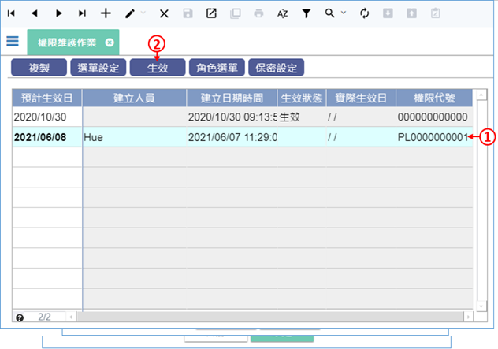
- 按一下要生效的權限資料。
- 按下「生效」鍵，如果該筆權限資料符合生效要件，「生效狀態」會直接顯示生效。
2.1.2 設定系統內的選單目錄
使用時機：系統有功能變動或新增表單時。

- 在左側的表單目錄中，展開「系統服務」→「權限控管」，然後按下「權限維護作業」，開啟表單。
- 按下「選單設定」按鍵。
新增目錄節點：
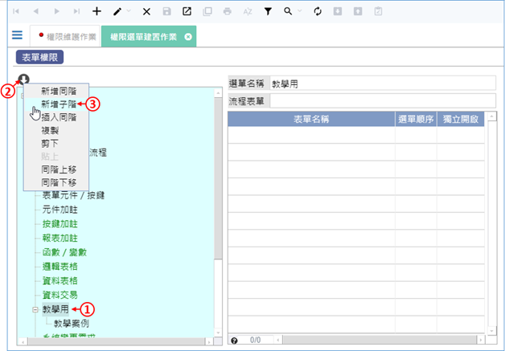
- 按一下要新增子節點的節點。
- 按一下上方的箭頭，開啟功能選單。
- 在功能選單裡面選擇「新增同階」、「新增子階」或「插入同階」。

- 輸入這個節點的選單名稱。
- 按下存檔鍵，並在對話視窗中按下「確定」即可。
移動目錄節點：

- 按一下要移動的節點。
- 按一下上方的箭頭，開啟功能選單。
- 在功能選單裡面選擇「同階上移」或「同階下移」。
2.1.3 設定選單下的表單清單
使用時機：系統有功能變動或新增表單時。
在目錄下增加表單：

- 點選要加掛表單的目錄節點。
- 進入編輯模式。
- 駐留在表格中的第一列空白列，輸入表單名稱。
- 輸入選單順序，表單會按照選單順序來排列。
- 如果表單要出現在選單上，請勾選獨立開啟，不勾選就代表這張表單是經由別張表單開啟的。
- 設定完畢之後請存檔。
在目錄下刪除表單：
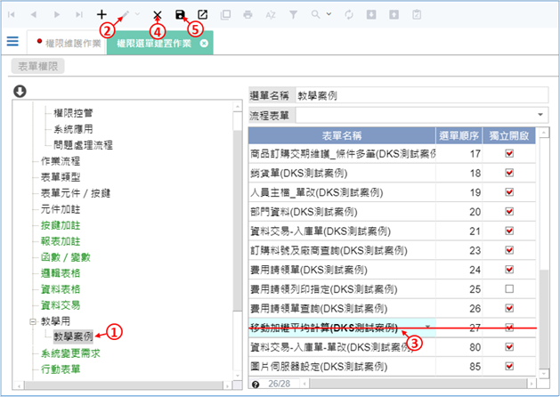
- 點選要刪除表單的目錄節點。
- 進入編輯模式。
- 點選要刪除的表單。
- 按下刪除鍵，標記刪除紅槓，可以一次標記多張表單。
- 按下存檔鍵之後，被標記的表單就會被刪除。
- 刪除的資料無法復原，請謹慎操作。
2.2 角色權限
2.2.1 設定角色及用戶
設定系統內的角色權限

- 在左側的表單目錄中，展開「系統服務」→「權限控管」，然後按下「權限維護作業」，開啟表單。
- 按下「角色選單」按鍵。
新增角色：
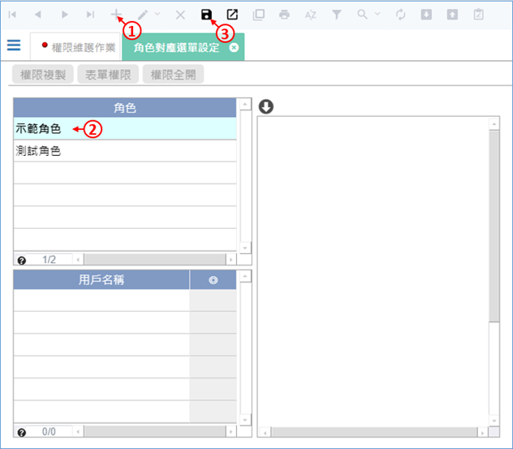
- 按下新增鍵。
- 輸入角色名稱。
- 按下存檔鍵。
設定角色可以看到的選單目錄：

- 按一下要設定的角色。
- 在瀏覽模式下，直接點選目錄節點上的核取方塊，當方塊被打勾之後，代表這個角色的使用者可以看到這個目錄節點。
- 如果勾選的節點在第2階或是更下階，要注意上階的節點也要勾選。
為角色加入使用者：

- 先點選要加入使用者的角色。
- 進入編輯模式。
- 駐留到用戶名稱的表格內。
- 開啟使用者清單。
- 勾選要加入這個角色的使用者，可以勾選單筆或多筆。
- 按下回傳鍵之後，可將資料帶回用戶名稱表格中。
- 按下存檔鍵，儲存設定即可。
刪除角色或是角色下的使用者：

- 要刪除一個角色的時候，請先點選要刪除的角色。
- 按下工具列的刪除鍵，然後在對話框中按下「確定」，即可刪除該角色。
- 如果只是要刪除這個角色下的一個使用者，請直接按下用戶名稱右側的刪除鍵，並且在對話框中選擇「是」，即可刪除該名使用者。
- 刪除的資料無法復原，請謹慎使用此功能。
2.2.2 設定角色及權限
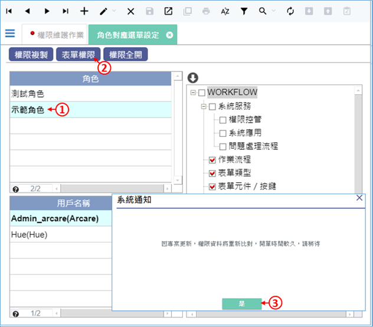
- 請先點選要設定權限的角色。
- 按下表單權限按鍵。
- 如果有彈出這個訊息，請按「是」，並稍候一下即可。

- 先選擇要設定權限的目錄節點，右側表格會顯示相對應的表單清單。
- 點選要設定權限的表單。
- 在要開啟權限的功能上，點兩下滑鼠左鍵，就可開啟這個功能的權限，再點兩下可以取消權限。
- 如果這張表單的所有功能都要開放，請在全開功能上點兩下。
- 如果這個目錄節點下的所有表單、所有功能都要開放，請按「全開」按鍵。
- 如果這個目錄節點下的所有表單、所有功能都要關閉，請按「全關」按鍵。
- 設定完畢請關閉表單。
複製角色的權限

- 按一下「要從其他角色複製權限」的角色。
- 按下「權限複製」按鍵。
- 在彈出的「角色權限複製作業」中，選擇要從哪個角色複製權限。
- 按下「執行」，並在對話視窗中選擇「是」即可。
2.3 設定保密群組
- 本功能可以讓指定的角色瀏覽表單資料時，將指定欄位的內容值變為「*」號。

- 在左側的表單目錄中，展開「系統服務」→「權限控管」，然後按下「權限維護作業」，開啟表單。
- 按下「保密設定」按鍵。
- 進入編輯模式。
- 挑選表單或是報表。
- 輸入表單或是報表的名稱。
- 挑選要保密的欄位名稱。
- 挑選不能看到這個資料的角色名稱，可以設定一個或多個角色。
- 設定完畢之後請存檔。
3.系統設定
3.1 系統參數
3.1.1 選單及頁籤顯示資訊
= 可以選擇表單頁籤上要不要顯示作業代號。
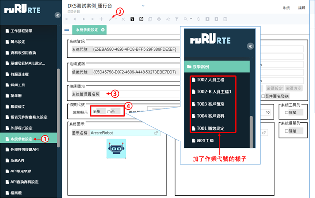
- 在左側的表單目錄中，展開「系統服務」→「系統應用」，然後按下「系統參數設定」，開啟表單。
- 進入編輯模式(F3)。
- 如果此系統有用到推播通知，可以在此設定推播出去時顯示的系統管理員名稱，就像郵件的寄件人一樣。
- 如果這個系統有編作業代號(表單代號)，可以選擇要不要顯示在選單上。
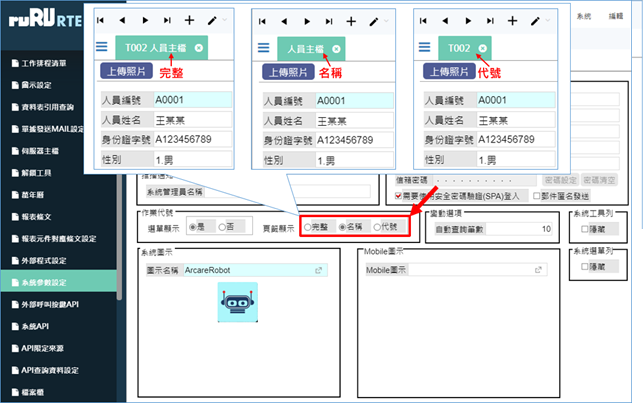
- 完整：顯示作業代號+表單名稱。
- 名稱：只顯示表單名稱。
- 代號：只顯示作業代號。
3.1.2 下拉選單筆數

- 系統內如果有使用下拉選單，而且選單中的選項來自於資料庫的資料，可以設定選單中最多顯示幾筆資料。設定的筆數越多，對資料庫的效能需求越高，一般建議在200筆以下。
3.1.3 隱藏工具列
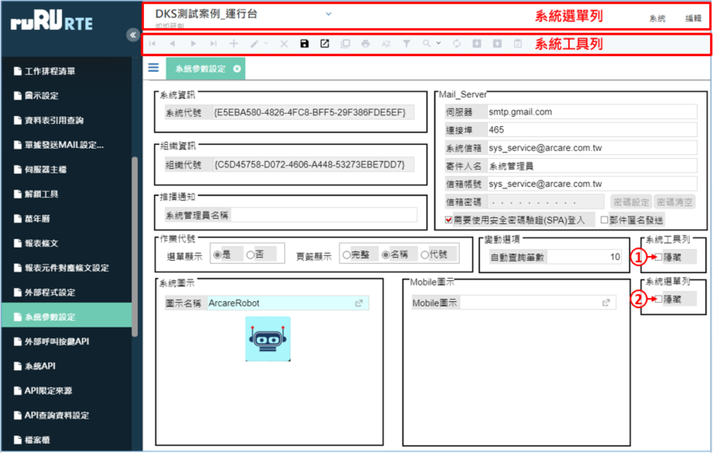
- 如果要隱藏上方的系統工具列，請勾選此項(會影響這個系統的所有表單)。
- 如果要隱藏上方的系統選單列，請勾選此項(會影響這個系統的所有表單) 。
3.1.4 系統圖示

- 系統圖示，可以在沒有開啟表單的時候，在版面空白處顯示一個圖示，只對PC裝置有效。
- Mobile圖示的功能與系統圖示類似，但是只對行動裝置有效。
- 所有參數都設定完畢之後，請記得存檔(F9)。 要使用圖示，必須事先在IDE設計環境進行「圖示設定」，在這邊才能挑選到該圖示。 |
3.2 郵件伺服器設定
- 系統內的郵件發送功能，需要依賴郵件伺服器，如果貴公司的郵件伺服器有變更，需修改郵件伺服器設定。本功能還能設定其他系統參數。
設定郵件伺服器：

- 在左側的表單目錄中，展開「系統服務」→「系統應用」，然後按下「系統參數設定」，開啟表單。
- 進入編輯模式(F3)。
- 填入貴公司的郵件伺服器資訊。
- 將設定存檔(F9)。
- 如果郵件伺服器需要密碼進行驗證，請按下密碼設定按鍵。

- 輸入密碼。
- 按下送出鍵即可。
3.3 萬年曆
- 本平台提供一個萬年曆功能，可自動產生指定年度的萬年曆資料，可讓系統內的表單查詢引用。
- 如果在IDE設計環境中，有宣告要查詢萬年曆資料表的資料，務必要使用本功能產生萬年曆資料。
產生萬年曆資料：

- 在左側的表單目錄中，展開「系統服務」→「系統應用」，然後按下「萬年曆」，開啟表單。
- 按下「新增年度」，開啟新增年度表單。
- 輸入要新增的年度，請注意不要輸入已經存在資料的年度。
- 選擇每週的第一天是「星期日」或是「星期一」。
- 確定選項無誤之後，按下「確認」鍵，就會產生該年度的資料。
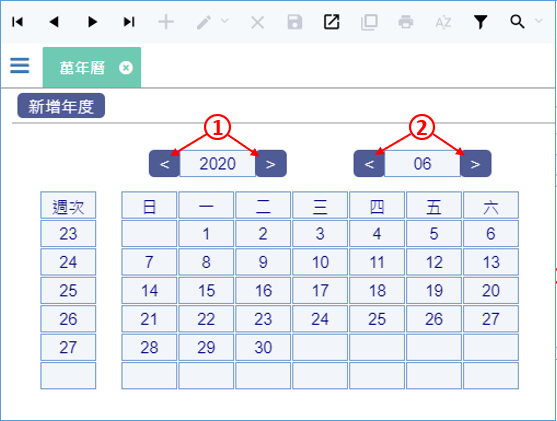
產生過萬年曆資料之後，可以查詢萬年曆資料：
- 這兩個按鍵可以切換年度。
- 這兩個按鍵可以切換月份。
3.4 多用戶衝突鎖定的排除方式(解鎖工具)
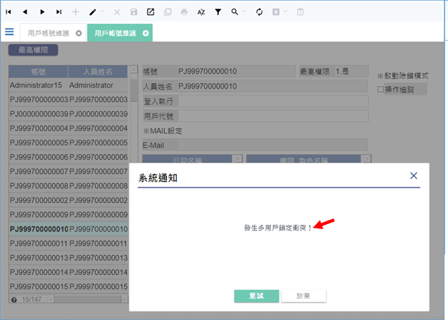
- 如上圖，當使用者開啟同一張表單兩次以上，並且對同一筆資料進入編輯模式，就會提示「發生多用戶衝突鎖定」的訊息。不同的使用者，對同一筆資料進行編輯時，也會彈出此訊息。
- 為了確保資料正確性，系統在一筆資料被使用者編輯時，會進行資料鎖定，在使用者退出編輯模式前，只要這筆資料再次收到編輯的需求時，就會提示多用戶衝突鎖定。
- 在這個情況下，如果是同一使用者造成的鎖定，只要回到原本進入編輯的畫面，繼續編輯資料即可；如果是不同使用者造成的鎖定，需協調另一名使用者退出編輯模式。
- 如果確定沒有重複對同一筆資料進行編輯的情況，仍然彈出此訊息，可能是因為網路斷線等原因造成死鎖定，請依照下列步驟進行排除：

- 在左側的表單目錄中，展開「系統服務」→「系統應用」，然後按下「解鎖工具」，開啟表單。
- 清單中會顯示目前系統內所有的鎖定資料，請由各欄位內的資料，判斷哪一筆是應該解鎖的資料。例如使用者反映「用戶帳號維護」這張表單發生鎖定，就要找表單名稱是「用戶帳號維護」的資料。找到後，點選該筆資料。
- 按下「解鎖」按鍵，即可解鎖該筆資料。
3.5 組織基本資料設定
- 本功能可設定「使用這個系統的組織」之基本資料。

- 在左側的表單目錄中，展開「系統服務」→「系統應用」，然後按下「組織基本資料」，開啟表單。
- 進入編輯模式(F3)。
- 可針對各項組織資料進行編輯。
- 編輯之後請存檔(F9)。
3.6 圖示設定
- 運行環境內如果要使用圖示，必須先在ruRU IDE設計環境上定義規格，運行環境內的圖示設定才會有資料。在運行換境內只能更換圖示的圖片，供緊急狀況或是測試圖片使用。

- 在左側的表單目錄中，展開「系統服務」→「系統應用」，然後按下「圖示設定」，開啟表單。
- 駐留要修改的資料。
- 進入修改模式(F3)。
- 設定圖示寬度。
- 設定圖示高度。
- 設定圖示副檔名。
- 設定完畢請存檔(F9)。
- 可重新上傳圖示檔案。
- 可下載圖示檔案。
3.7 資料表引用查詢
- 本功能可查詢資料表的資料引用狀況。

- 在左側的表單目錄中，展開「系統服務」→「系統應用」，然後按下「資料表引用查詢」，開啟表單。
- 輸入被引用的表格名稱，可開窗挑選。
- 輸入要查詢的鍵值。
- 按下「查詢」鍵即可。
3.8 伺服器主檔
新增伺服器資料：

- 在左側的表單目錄中，展開「系統服務」→「系統應用」，然後按下「伺服器主檔」，開啟表單。
- 進入新增模式(F2)。
- 挑選伺服器的使用類別。
- 輸入伺服器IP。
- 輸入連接埠。
- 如果有網域名稱，請輸入網域名稱。
- 輸入完畢之後請存檔(F9)。
修改伺服器資料：

- 按一下要修改的資料。
- 進入新增模式(F2)。
- 修改資料內容。
- 修改完畢之後請存檔(F9)。
刪除伺服器資料：

- 按一下要刪除的資料。
- 按下刪除鍵(F4)。
- 在對話視窗中按下「確定」即可。
- 刪除的資料無法復原，只能重新建立，請務必謹慎操作。
4.表單相關設定{#FormParaSet}
4.1.元件模版設定
- 元件模版的規格，必須先在ruRU IDE設計環境上定義，運行環境內的元件模版設定才會有資料。在運行換境內只供緊急調整或是測試使用，一旦IDE環境有新版本發行安裝，運行環境內的設定值就會被覆蓋。

- 在左側的表單目錄中，展開「系統服務」→「系統應用」，然後按下「元件模版設定」，開啟表單。
- 點選要編輯的模版。
- 進入修改模式(F3)。
- 可設定文字格式內容，A代表A-Z，9代表0-9。
- 設定此模版輸入英文字母時，是否要限定大寫。
- 如果要自動填滿模版長度，需設定填滿符號。
- 選擇西元年或民國年。
- 選擇年、月、日的排列順序。
- 選擇年、月、日的分隔符號。
- 根據不同的模版類別，右側可以設定的欄位會有所不同，請注意。各個設定欄位也請視需要設定，不是每個欄位都需要設定。

- 選擇12時制或是24時制。
- 選擇時分模式或是時分秒模式。
- 選擇版是否為英文樣式。
- 選擇是否顯示貨幣符號($)。
- 選擇是否顯示百分比符號。
- 選擇是否顯示千分位的逗號(撇節)。
- 輸入小數位數。
- 輸入填滿符號。
- 選擇是否要轉換為國字金額或英文金額。
- 根據不同的模版類別，右側可以設定的欄位會有所不同，請注意。各個設定欄位也請視需要設定，不是每個欄位都需要設定。

- 如果該模版有使用遮罩，遮罩的設定規格只能在IDE設計環境中定義，運行環境無法修改。
- 設定完畢之後，請記得存檔(F9)。
4.2 表單編碼欄位設定
- 本設定是設定表單編碼欄位的編碼規則，必須先在ruRU IDE設計環境上定義規格。運行環境內的設定只供緊急調整或是測試使用，一旦IDE環境有新版本發行安裝，運行環境內的設定值就會被覆蓋。
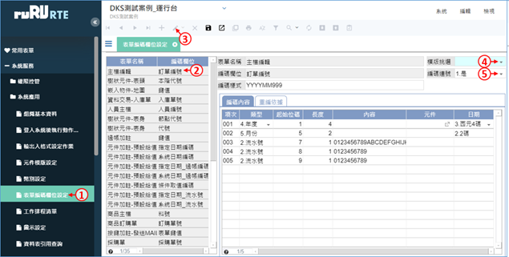
- 在左側的表單目錄中，展開「系統服務」→「系統應用」，然後按下「表單編碼欄位設定」，開啟表單。
- 點選要編輯的表單及編碼欄位。
- 進入修改模式(F3)。
- 可挑選預設模版，也可不設。
- 決定此項編碼在資料庫中是否必須連號(不可跳號)，若不可跳號，多人使用時需互相等待編碼。
- 在「編碼不連號」模式下，系統先發放編碼給各個同時要存檔的使用者，使用者各自用取得的編碼去存檔，如果有使用者存檔失敗，該使用者取得的編碼，就不會存在資料庫中，所以編碼會跳號。
- 在「編碼連號」模式下，就會採取排隊存檔並取得編碼的方式，當大量使用者同時使用時，排在後方的使用者會感覺效能表現比較差，但是可以讓編碼維持連號。

- 可輸入參考用的編碼樣式。
- 挑選編碼的類型。
- 設定起始位碼，通常會自動計算出來。
- 若第2步驟挑選「固定值」，請設定「長度」。
- 若第2步驟挑選「固定值」或「流水號」，請設定「內容」。
- 若第2步驟挑選「元件」，請輸入「元件名稱」，可開窗挑選。
- 若第2步驟挑選「年度」或「月份」，請設定「日期」參數。月份1碼的編碼為1~9、A~C，月份2碼的編碼為01~12。
- 設定完畢之後請存檔(F9)。

- 「重編依據」頁籤的內容，顯示編碼將根據哪些元件的值不相同而重新編碼，這部分的設定只能在IDE設計環境編輯，運行環境無法更動。
4.3 幣別設定
- 可設定運行環境的幣別資料。
新增幣別資料：
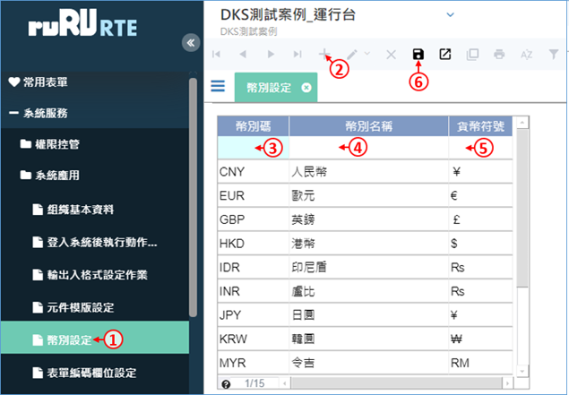
- 在左側的表單目錄中，展開「系統服務」→「系統應用」，然後按下「幣別設定」，開啟表單。
- 新增一筆資料(F2)。
- 輸入幣別碼。
- 輸入幣別名稱。
- 輸入貨幣符號。
- 輸入完畢之後請存檔(F9)。
修改幣別資料：
- 按一下要修改的資料。
- 進入修改模式(F3)。
- 修改幣別名稱和貨幣符號。
- 修改完畢之後請存檔(F9)。
刪除幣別資料：(刪除的資料無法復原，請務必謹慎操作。)

- 按一下要刪除的資料。
- 按下刪除鍵(F4)。
- 在對話視窗中按下「確定」即可。
5.按鍵相關設定
5.1 工作排程清單
- 本功能是設定表單按鍵自動執行的排程，必須先在ruRU IDE設計環境上宣告規格，運行環境內只能調整設定值，無法創建新的排程項目。

修改排程規格是否隨ruRU IDE設計規格更新：
- 在左側的表單目錄中，展開「系統服務」→「系統應用」，然後按下「工作排程清單」，開啟表單。
- 按一下要修改的排程。
- 進入修改模式(F3)。
- 選擇是否「依規格更新」。
- 是：排程設定值被改變之後，只要在IDE環境修改此排程的設定值，下次發行安裝之後，就會覆蓋運行環境的設定值。
- 否：一旦排程設定值被改變，該排程會維持運行環境的設定值，在IDE環境修改、發行、安裝之後，也不會覆蓋運行環境的設定值。(此為預設值)
- 設定完畢之後請存檔(F9)。
調整排程的執行方式：

- 在左側的表單目錄中，展開「系統服務」→「系統應用」，然後按下「工作排程清單」，開啟表單。
- 按一下要修改的排程。
- 按下「執行方式」。

- 進入修改模式(F3)。
- 選擇工作排程執行的方式。
- 設定開始日期、結束日期，以及開始的時間點(格式為四位數字，例如設定1630，代表16:30)。
- 若第2步驟選擇「每日」，請設定間隔日數，以及每日執行的時間點。
- 若第2步驟選擇「每週」，請設定間隔的週數，以及每週的星期幾執行。
- 若第2步驟選擇「每月N日」，請設定在幾月、幾日執行。
- 若第2步驟選擇「每月N週」，請設定在幾月、第幾週、星期幾執行。
- 每次開始執行後，若需要每隔幾分鐘重複執行，並在一定的分鐘數之後結束，請在此設定。
- 設定完畢之後請存檔(F9)。
查詢執行明細或立即執行：
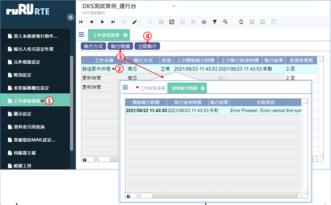
- 在左側的表單目錄中，展開「系統服務」→「系統應用」，然後按下「工作排程清單」，開啟表單。
- 按一下要處理的排程。
- 按下「執行明細」可以查詢過去的執行記錄，如果失敗的話會顯示失敗原因。
- 按下「立即執行」，可以立即執行該排程。
5.2 外部程式設定(API)
- 本功能可設定表單呼叫外部API程式的設定值，必須先在ruRU IDE設計環境上宣告規格，運行環境內只能調整設定值，無法創建新的項目。

- 在左側的表單目錄中，展開「系統服務」→「系統應用」，然後按下「外部程式設定」，開啟表單。
- 按一下要設定的API資料。
- 進入編輯模式(F3)。
- 修改API的連線網址路徑。
- 設定完畢之後請存檔(F9)。
5.3 輸出入格式設定作業
- 本功能可設定Excel或txt檔案的匯入匯出設定，必須先在ruRU IDE設計環境上宣告規格，運行環境內只能應急調整設定值，當IDE發行新的版本安裝之後，設定值將被新規格覆蓋。

- 在左側的表單目錄中，展開「系統服務」→「系統應用」，然後按下「輸出入格式設定作業」，開啟表單。
- 開窗挑選要查詢的表單名稱(非必要)。
- 輸入要查詢的功能鍵名稱(非必要)。
- 挑選要查詢的輸出入類別。
- 按下「載入」，下方會列出符合查詢條件的輸出入格式資料。
- 按一下要調整的資料。
- 按下「格式設定」，開啟「輸出設定」或「輸入設定」介面。
輸出設定：

- 進入編輯模式(F3)。
- 填入檔案名稱。
- 選擇輸出檔案的類型。
- 選擇檔案編碼類型。
- 可上傳Ecxel範本檔案。
- 可在瀏覽模式下載Ecxel範本檔案。
- 如果有上傳範本，要指定範本的工作頁是Excel檔案中的第幾個分頁。
- 選擇第一列是否為資料行名。
- 若輸出類型為txt檔，選擇間隔設定。
- 若輸出類型為Excel檔，可指定輸出的頁籤名稱或頁次。
- 若輸出類型為txt檔，選擇文字定位項(判斷為字串資料的依據)。
- 若輸出類型為txt檔，選擇資料列的分隔符號(換列的依據)。
- 若輸出類型為txt檔，選擇資料行的分隔符號(判斷為不同欄位的依據)。
欄位設定

- 切換到「欄位設定」頁籤。
- 可挑選指定的模版(非必要)。
- 可指定欄位的長度。
- 指定每個欄位的文件位置，如果是txt檔案，則以數字代表欄位順序；如果是Excel檔案，則以「欄」的編號代表位置。
- 設定輸出之後要看到的欄位名稱。
- 若在Excel檔中有輸出圖片，可指定圖片欄寬和列高。
- 若是輸出Excel檔，可選擇是否要自動合併欄位(跨欄置中)，相同值的欄位會自動合併。
排序設定

- 如果要指定輸出資料的排序，請切換到「排序設定」頁籤。
- 指定排序欄位的順序(會預設自動輸入序號，一般狀況下不需人工編輯)。
- 挑選要排序的欄位。
- 選擇排序的類型。
- 設定完畢之後請存檔(F9)。
輸入設定：

- 進入編輯模式(F3)。
- 填入檔案名稱。
- 選擇輸出檔案的類型。
- 選擇檔案編碼類型。
- 選擇第一列是否為資料行名。
- 若輸出類型為txt檔，選擇間隔設定。
- 若輸出類型為Excel檔，可指定輸出的頁籤名稱或頁次。
- 若輸出類型為txt檔，選擇文字定位項(判斷為字串資料的依據)。
- 若輸出類型為txt檔，選擇資料列的分隔符號(換列的依據)。
- 若輸出類型為txt檔，選擇資料行的分隔符號(判斷為不同欄位的依據)。
- 切換到「欄位設定」頁籤。
- 可挑選指定的模版(非必要)。
- 可指定欄位的長度。
- 指定每個欄位的文件位置，如果是txt檔案，則以數字代表欄位順序；如果是Excel檔案，則以「欄」的編號代表位置。
- 如果這個欄位在匯入時，要檢查「不可空白」請勾選這個選項。
- 若是匯入Excel檔，可選擇是否要自動解開合併欄位的資料(跨欄置中)，合併欄位會被解開，並且在解開的每個儲存格都填入相同的值。
- 設定完畢之後請存檔(F9)。
5.4 單據發送MAIL設定作業
- 本功能可設定表單按鍵發送郵件的內容，必須先在ruRU IDE設計環境上宣告規格，運行環境內只能應急調整設定值，當IDE發行新的版本安裝之後，設定值將被新規格覆蓋。

- 在左側的表單目錄中，展開「系統服務」→「系統應用」，然後按下「單據發送MAIL設定作業」，開啟表單。
- 按一下要調整的資料。
- 按下「MAIL設定」，開啟「發送MAIL設定」介面。

- 進入編輯模式(F3)。
- 挑選寄件人類別。
- 設定郵件主旨內容。
- 設定郵件內文內容。
- 設定完畢請存檔(F9)。
- 如果要調整變數的內容，需回到IDE設計環境調整，運行環境無法調整。
5.5 檔案櫃
- 本功能可調整表單按鍵上傳檔案到FTP的設定值，必須先在ruRU IDE設計環境上宣告上傳檔案的規格，運行環境內才會有檔案櫃項目可供調整。
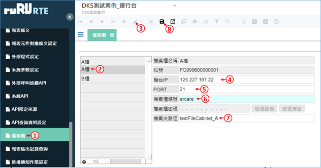
- 在左側的表單目錄中，展開「系統服務」→「系統應用」，然後按下「檔案櫃」，開啟表單。
- 按一下要調整的檔案櫃。
- 進入修改模式(F3)。
- 輸入FTP伺服器的IP。
- 輸入FTP伺服器的連接埠號。
- 輸入FTP的登入帳號。
- 輸入檔案資料夾的路徑。假設FTP的資料夾是在「C:\FTP」，那上圖案例的完整路徑就是「C:\FTP\testFileCabinet_A」。
- 修改完畢之後請存檔(F9)。

- 按下「密碼設定」鍵。
- 輸入FTP的連線密碼。
- 按下「送出」鍵即可完成密碼設定。
- 若要刪除密碼，請按「密碼刪除」。
5.6 推播通知作業設定
- 本功能可設定表單按鍵發送推播的內容，必須先在ruRU IDE設計環境上宣告規格，運行環境內只能應急調整設定值，當IDE發行新的版本安裝之後，設定值將被新規格覆蓋。

- 在左側的表單目錄中，展開「系統服務」→「系統應用」，然後按下「推播通知作業設定」，開啟表單。
- 按一下要調整的資料。
- 按下「通知設定」，開啟「推播通知設定」介面。

- 進入編輯模式(F3)。
- 挑選推播人類別。
- 設定推播主旨內容。
- 設定推播內文內容。
- 設定完畢請存檔(F9)。
- 如果要調整變數的內容，需回到IDE設計環境調整，運行環境無法調整。
6.報表相關設定
6.1 報表條文
- 本功能可設定報表條文的內容，必須先在ruRU IDE設計環境上宣告規格，運行環境內只能應急調整設定值，當IDE發行新的版本安裝之後，設定值將被新規格覆蓋。

- 在左側的表單目錄中，展開「系統服務」→「系統應用」，然後按下「報表條文」，開啟表單。
- 按一下要修改的資料。
- 進入修改模式(F3)。
- 修改條文內容。
- 修改完畢請存檔(F9)。
6.2 報表元件對應條文設定
- 本功能可設定報表元件對應條文的內容，必須先在ruRU IDE設計環境上宣告規格，運行環境內只能應急調整設定值，當IDE發行新的版本安裝之後，設定值將被新規格覆蓋。

- 在左側的表單目錄中，展開「系統服務」→「系統應用」，然後按下「報表元件對應條文設定」，開啟表單。
- 按一下要修改的資料。
- 進入修改模式(F3)。
- 可開啟「報表條文」介面，修改條文內容(請參考「報表條文」的說明)。
- 修改完畢請存檔(F9)。
6.3 報表輸出記錄查詢
- 本功能可查詢報表的輸出記錄。
- 只有在ruRU IDE設計環境宣告要留下輸出記錄的報表，才能被查詢到輸出記錄。
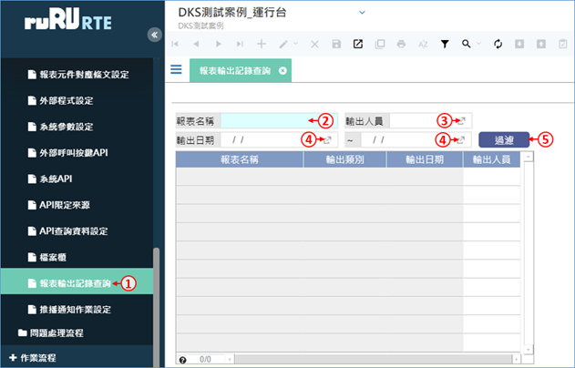
- 在左側的表單目錄中，展開「系統服務」→「系統應用」，然後按下「報表元件對應條文設定」，開啟表單。
- 可輸入報表名稱。
- 可挑選輸出人員姓名。
- 可選擇輸出日期區間。
- 過濾資料，符合條件的資料會顯示在下方表格中。
7.API相關設定
7.1 API 限定來源
- 本平台可以開放外部系統透過API程式查詢本平台的資料庫資料，或是執行本平台特定表單之特定按鍵的功能。
- 要透過API呼叫本平台功能的外部程式，裝置的IP必須被設定在API限定來源中，才能呼叫成功，以維護資訊安全。
新增來源IP資料：

- 在左側的表單目錄中，展開「系統服務」→「系統應用」，然後按下「API限定來源」，開啟表單。
- 新增一筆資料(F2)。
- 輸入要呼叫本平台API功能的來源IP。
- 可輸入方便管理的說明文字。
- 輸入完畢之後請存檔(F9)。
修改來源IP資料：

- 在左側的表單目錄中，展開「系統服務」→「系統應用」，然後按下「API限定來源」，開啟表單。
- 按一下要修改的資料。
- 進入修改模式(F3)。
- 修改來源IP或說明文字。
- 修改完畢之後請存檔(F9)。
刪除來源IP資料：

- 在左側的表單目錄中，展開「系統服務」→「系統應用」，然後按下「API限定來源」，開啟表單。
- 按一下要刪除的資料。
- 按下刪除鍵(F4)。
- 在對話視窗中按下「確定」即可。
- 刪除的資料無法復原，只能重新新增資料，請務必謹慎操作。
7.2 系統API
- 本功能可用來查詢本平台提供哪些API接口讓外部系統連接。

- 在左側的表單目錄中，展開「系統服務」→「系統應用」，然後按下「系統API」，開啟表單。
- 可切換上、下筆資料，查看不同之系統API的規格。
- 顯示API的名稱，呼叫的路徑就是「http://IP:PORT/API名稱」或「https://網域名稱/API名稱」。
- 顯示API的說明內容。
- 顯示API的程式類型和資料格式。
- 顯示API的傳遞、接收參數之詳細內容和說明。
7.3 外部呼叫按鍵API
- 本平台可以開放外部系統呼叫特定表單之特定按鍵的功能，但哪些按鍵的功能可以被呼叫，需事先在ruRU IDE設計環境宣告，本功能僅供查詢內容。

- 在左側的表單目錄中，展開「系統服務」→「系統應用」，然後按下「外部呼叫按鍵API」，開啟表單。
- 可選擇要查看哪張表單、哪個按鍵的API內容。
- 顯示API的名稱，呼叫的路徑就是「http://IP:PORT/API名稱」或「https://網域名稱/API名稱」。
- 顯示API的傳遞、接收參數之詳細內容和說明。
7.4 API查詢資料設定
- 本平台可以開放外部系統呼叫一個查詢資料專用的API，以取得本平台資料庫的資料。本功能用來定義查詢的內容。

新增查詢資料設定：
- 在左側的表單目錄中，展開「系統服務」→「系統應用」，然後按下「API查詢資料設定」，開啟表單。
- 進入新增模式(F2)。
- 輸入查詢目的。
- 輸入查詢料號，請輸入英數字組成的料號，每個查詢設定的料號必須是唯一值。
- 輸入查詢內容，請使用MS-SQL Server的查詢語法，若遇到參數，請用「RT[參數名]」來表示。
- 輸入查詢說明(非必要)。
- 如果在查詢內容中有使用參數，請將參數列在這個表格中，並宣告每個參數的型態。
- 設定完畢之後請存檔(F9)。

修改查詢資料設定：
- 在左側的表單目錄中，展開「系統服務」→「系統應用」，然後按下「API查詢資料設定」，開啟表單。
- 按一下要修改的資料。
- 進入修改模式(F2)。
- 編輯各項設定值。
- 修改完畢之後請存檔(F9)。

刪除查詢資料設定：
- 在左側的表單目錄中，展開「系統服務」→「系統應用」，然後按下「API查詢資料設定」，開啟表單。
- 按一下要刪除的設定資料。
- 按下刪除鍵(F4)。
- 在對話視窗中按下「確定」即可。
- 刪除的資料無法復原，只能重新新增資料，請務必謹慎操作。
8.問題處理
8.1 問題中心
- 本功能可用來查詢使用者在使用系統時，透過「問題回報」功能所回報的問題，並進一步處理。

- 在左側的表單目錄中，展開「系統服務」→「問題處理流程」，然後按下「問題中心」，開啟表單。
- 輸入查詢條件。
- 按下「更新」，如果有符合條件的資料，會顯示在下方表格中。
- 如果要改變問題的處理狀態，先按一下要改變狀態的問題。
- 按下「處理狀態」，再選擇「結案」或是「問題重啟」，以改變問題狀態。
- 如果要查看問題的詳細內容，請按「瀏覽」鍵。

- 如果使用者在回報問題時有上傳附件，可下載附件。
- 如果使用者的帳號有開啟追蹤功能，可開啟BPS查看操作記錄。
- 要回覆使用者問題時，可以在此欄位輸入回覆內容。
- 按下「確定」可以送出回覆。
- 按下「離開」可回到「問題中心」畫面。